运维基础概念
机房
对于IDC运维来说，机房就像我们的家，很大一部分时间，是在机房度过的。
在外界看来，机房是一个高大上且充满神秘感的地方。在机房工作，一定是逼格满满，帅到爆炸。
然鹅，在运维眼里，机房其实就是一个工地。
只不过真实的工地里搬的是砖，而我们这些通信民工在机房里搬的，是虚拟世界的“0”和“1”。
机房之所以叫机房，就是因为这里存放了大量的机器设备。
机房第一坑，太冷
为了保证这些设备不会因为发热量太高而宕机罢工，机房通常都会配备强力空调进行散热降温。
所以，机房的温度会非常低，有时候甚至只有10℃左右。进入机房，就像进入了冷库。
如果你所处的位置处于空调吹风口，那呼呼的冷风绝对让你生不如死。
炎炎夏日的话，更是冰火两重天，极容易感冒、中暑。
所以，任何时候进入机房，都需要随身带一件厚外套，以防万一。
机房第二坑，噪音
机房是噪音极大的场所。无数的设备在运转，风扇在嘶吼。封闭的空间使得噪声放大了N倍，可以说是震耳欲聋。
所以超哥喜欢带降噪耳机，加上鸡你太美的歌，什么也听不见。
机房第三坑，没有凳子
在机房里调试设备，由于机房的特殊环境，是没有显示器，桌子板凳的，只有机柜，服务器。
这个时候，就会很麻烦。你看到运维一手托电脑，一手敲键盘，貌似很帅的样子，你让他保持几个小时试试看？手都要残废掉。。。半小时都坚持不了。。。
所以通常情况下，我们都会因地制宜，就地取材。什么纸壳箱、门板、网线桶，都会用上。
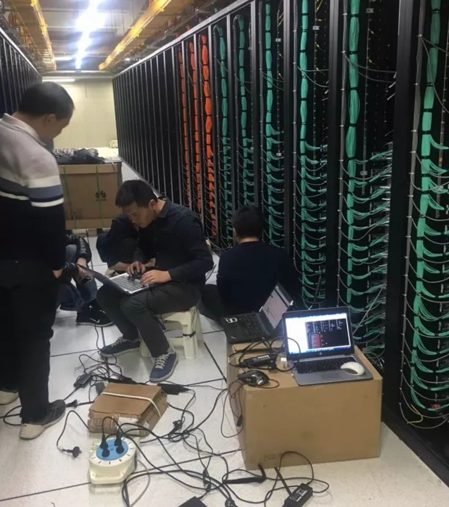
一般更为严谨的机房，比如保险公司，银行，金融企业的机房，进出都要登记，刷卡，去除静电，手套，鞋套，外来访客都还要刷身份证。确保机房不要出现任何故障。
进入机房后，就能看到所有的硬件系统，挺多高大上的设备，比如Cisco三层交换机，F5硬件负载均衡，机架式服务器，等。（当然这是很专业，有钱的机房，穷一点的公司，那就。。。）
机房走廊
配电柜
IBM服务器
IBM小型机（比普通服务器性能更强悍，更贵，主要用于金融证券行业）
服务器单位
服务器或者租用机柜的时候，有时会听到1U、2U、4U或者42U等类似这样子的名词。而这些名词又代表什么意思呢？
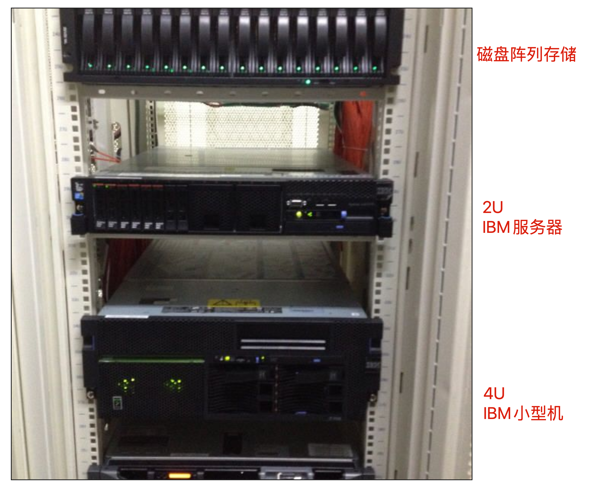
关于“U”的单位
U是一种表示服务器外部尺寸的单位，是unit的缩略语。
规定了服务器的尺寸，可以使服务器以一定的尺寸放在机架上。
机架上有固定服务器的螺孔，以便它能与服务器的螺孔对上号，再用螺丝加以固定好，这样子可以方便安装每一部服务器所需要的空间。
说白了1U指的就是服务器的厚度，是固定的4.445厘米。
2U=4.445*2=8.89厘米。
4U=4.445*4=17.78 厘米。
在实际使用当中，1U或者2U服务器是最经常使用的。因为服务商是根据服务器占用空间来计算费用的，所以采用1U服务器是最节省空间的和价格最低的。
1U服务器：https://item.jd.com/100014694590.html
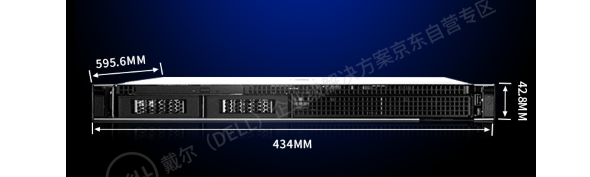
2U服务器：https://item.jd.com/64624388025.html
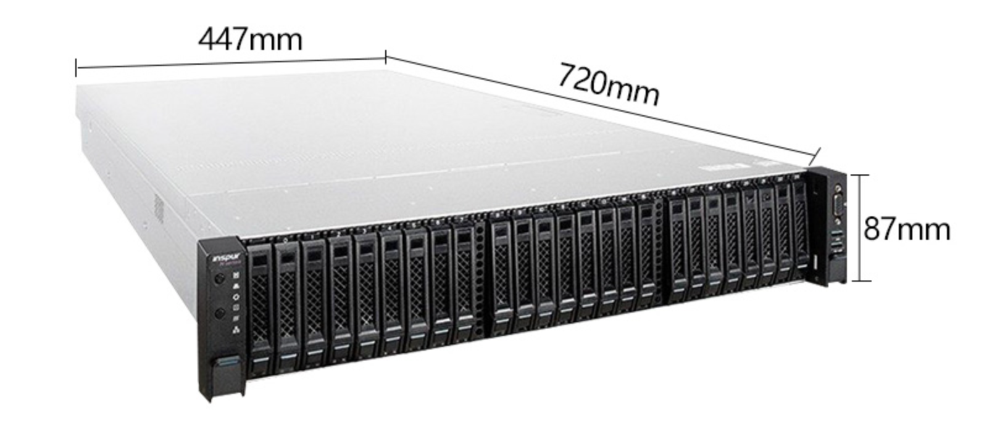
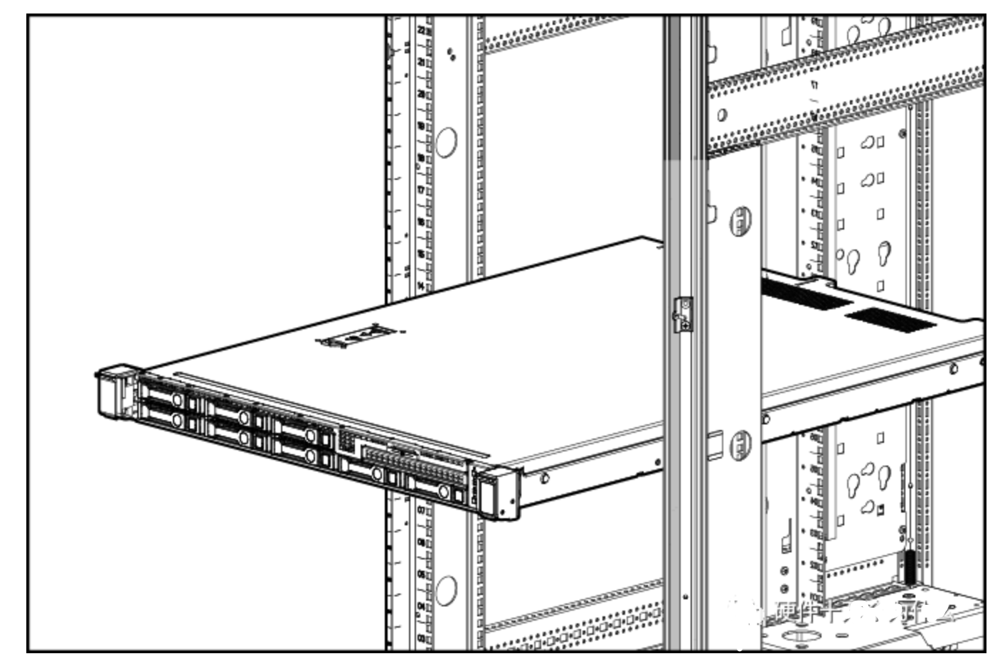
更为常见的机架式服务器，经济实惠
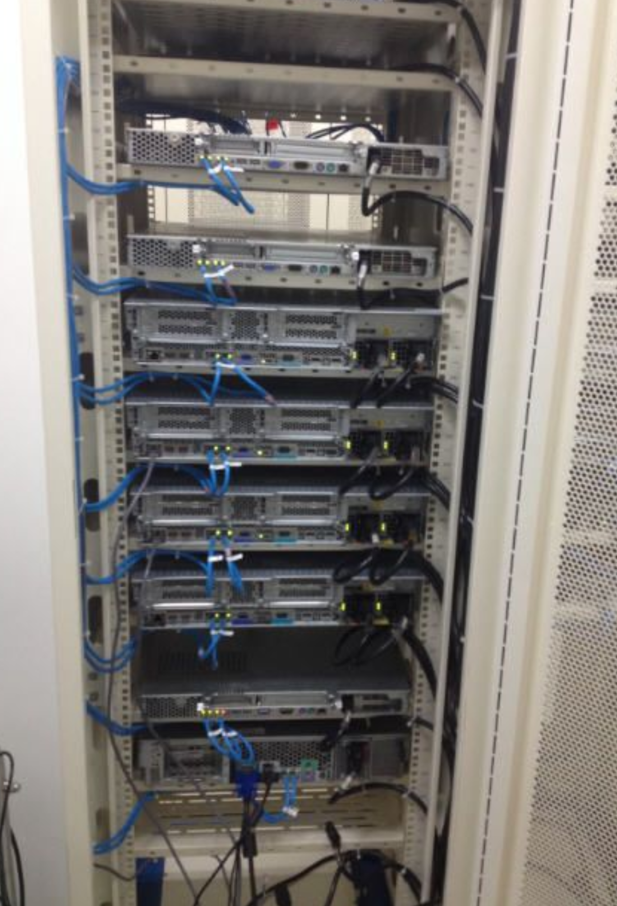
一个机柜的服务器，一般可以放12台
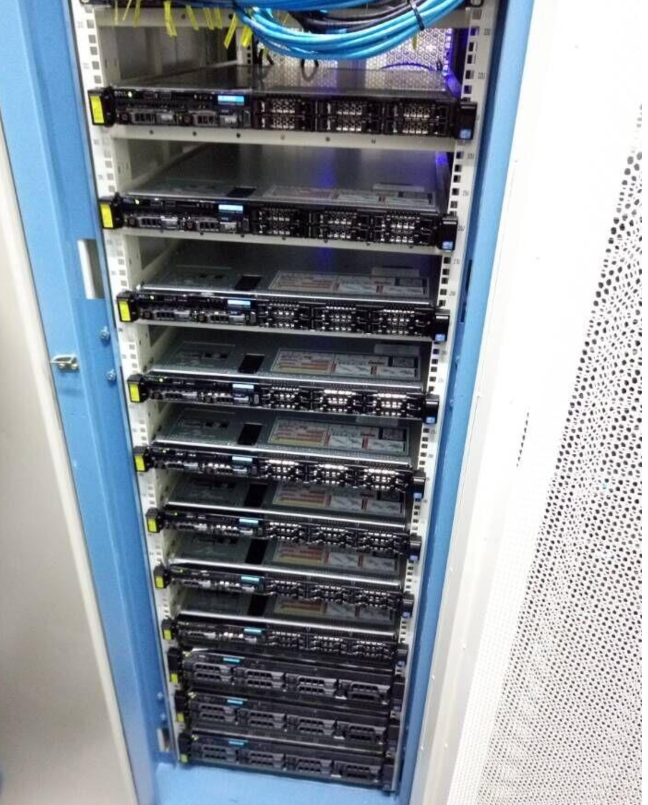
机柜通道
服务器布线
服务器接口
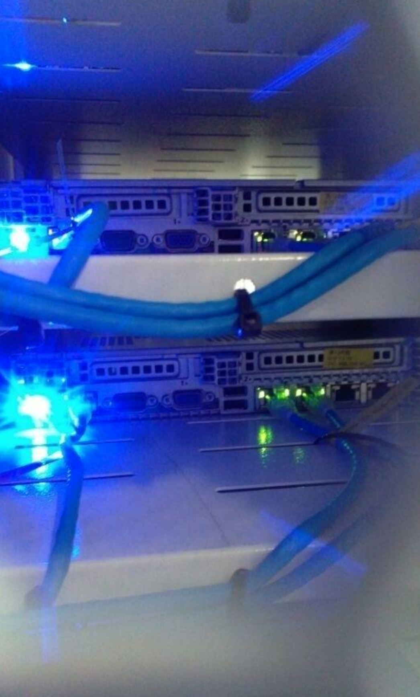
服务器双电源
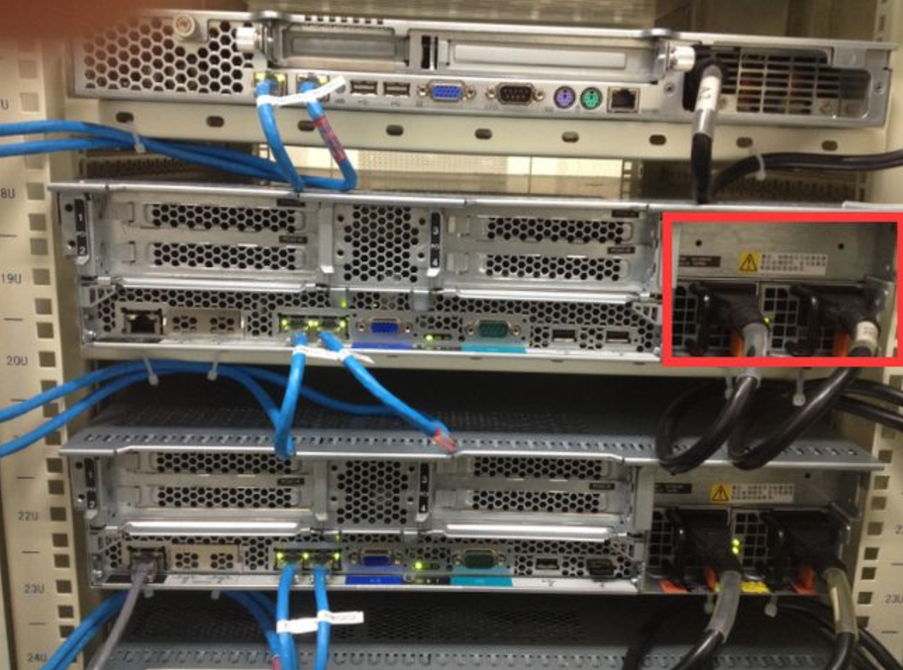
服务器
服务器定义
- 广义：专门给其他机器提供服务的计算机。
- 狭义：一台高性能的计算机，通过网络提供外部计算机一些业务服务
个人PC内存大概8G，服务器内存128G起步
硬件实体服务器可以分为四大类：塔式服务器、刀片服务器、机式服务器、柜式服务器。
刀片式服务器
就像家里摆放菜刀组合的架子一样，每一块刀片，就是每一块系统主板，也是每一个独立的系统，每一个独立的服务器，明显很节省空间，属于低成本服务器平台。
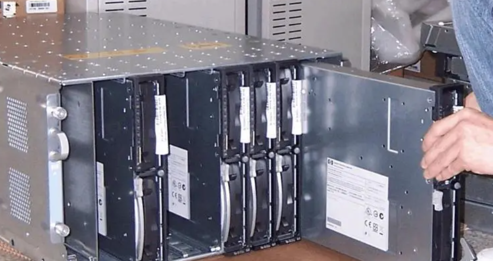
-
柜式服务器
一体化柜式机房无需太多空间、资金、人员，只需要提供一路或两路市电电源，就可以快速地构建可靠运行的机房。
主要组成是：
- 机柜模块
- 配电模块
- 监控模块
- 制冷模块
- UPS不间断电源，利用蓄电池防止计算机断电、
- 消防模块
一体化柜式机房建设时长短，各子模块之间不易发生故障，极大地方便了管理与维护，这就意味着系统的兼容性很高，机房的整体利用率很充足，用“智能灵活，高性价比”来形容再合适不过了。
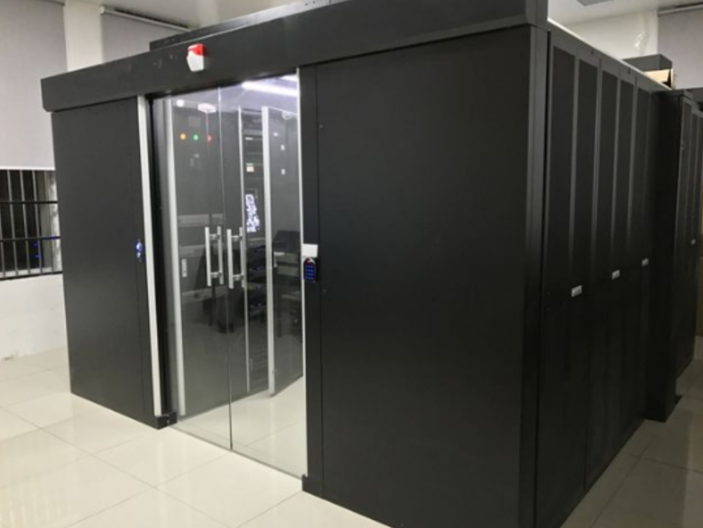
机架式服务器
这个就是我们常说的那种1U,2U等这样的服务器，是按照统一标准外观设计的服务器，可以理解为是那种放倒的PC主机，能够一台一台的放倒服务器机架上。
机架式服务器的优点是在于管理方面更加灵活与方便，但是这个需要部署在特定的机房环境下。
塔式服务器
塔式服务器（Tower Server）应该是见得最多也最容易理解的一种服务器结构类型，因为它的外形以及结构都跟立式PC差不多。
当然，由于服务器的主板扩展性较强、插槽也多出一堆，所以个头比普通主板大一些，因此塔式服务器的主机机箱也比普通机箱要大，一般都会预留足够的内部空间以便日后进行硬盘和电源的冗余扩展。
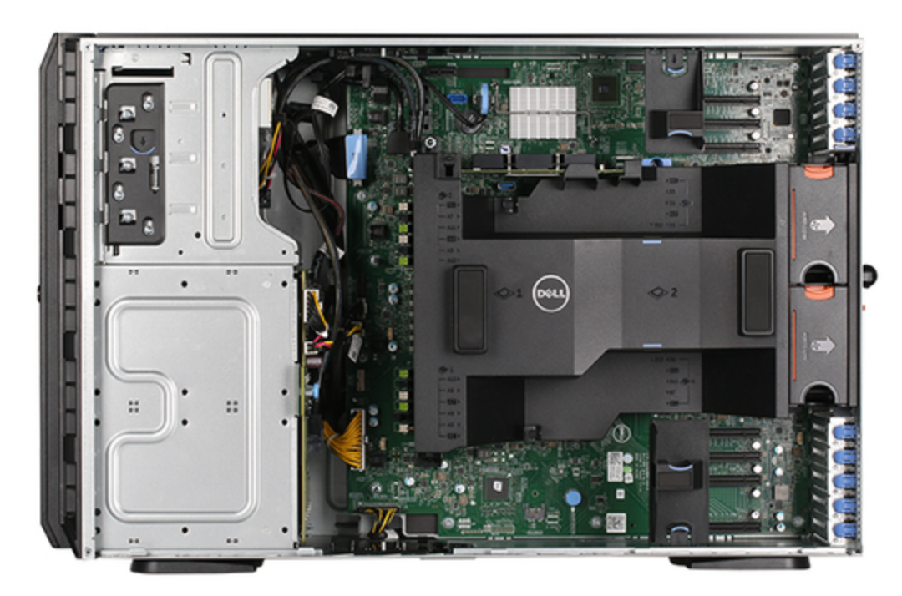
服务器特点
- 可用性 可靠性、持续性。服务器一般需要7*24H不间断工作（如Web网站）
- 可利用性 服务器要为多用户提供服务，因此需要较高的连接和运算性能（性能要高）
- 可扩展性 服务器需要具备可扩展空间和冗余件（可以增加内存、硬盘等）
- 可管理性X 保证在设备不停机的情况下修复服务器故障（一般服务器有两个电源，坏了一个还有一个） 服务器还需要具备如双机备份、系统备份、在线诊断、故障预警等功能。
问答
服务器是什么
- 服务器指的是
网络中能对其他机器提供某些服务的计算机系统，相对普通PC，服务器指的是高性能计算机，稳定性、安全性要求更高。 - 服务器的高性能体现在高速的运转能力，长时间的可靠运行，强大的数据吞吐能力。
台式机可以当服务器用吗
仅仅从能够在网络中提供服务的角度来看，是可以的，但是个人台式机的性能、稳定性、安全性都达不到服务器的标准，因此更适合个人工作使用。
且个人笔记本、台式机一般都安装windows系统、易用，美观，处理日常工作。
而服务器一般安装linux系统，提供更强大、稳定的计算服务。
IP地址
提到“地址”，我们会想到快递，收发快递时候，得有发件人地址和收件人地址，才能保证快递能正确的送达目的地，比如这样
ip地址其实就是互联网上的地址，全称Internet Protocol Address，我们在网上刷知乎啊，刷美剧啊，和师妹聊天啊，其实就是一个一个数据包在互联网上收发的过程。
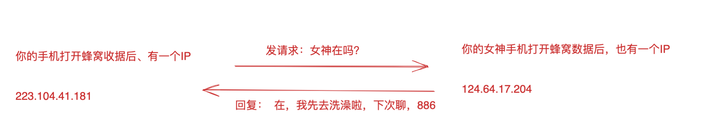
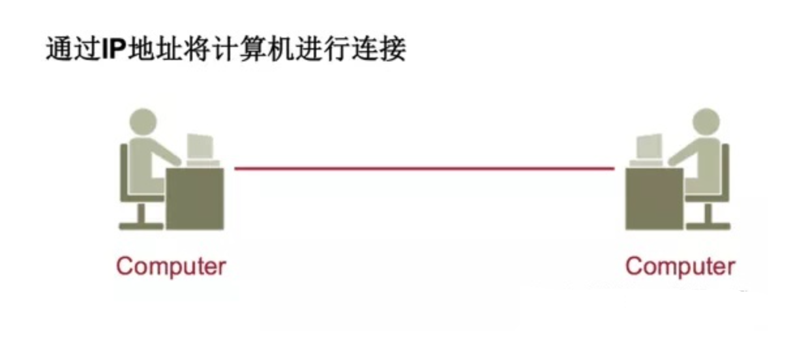
查看自己的IP（局域网）
IPv4（第四版本的IP协议）是构成现今互联网技术的基石协议；
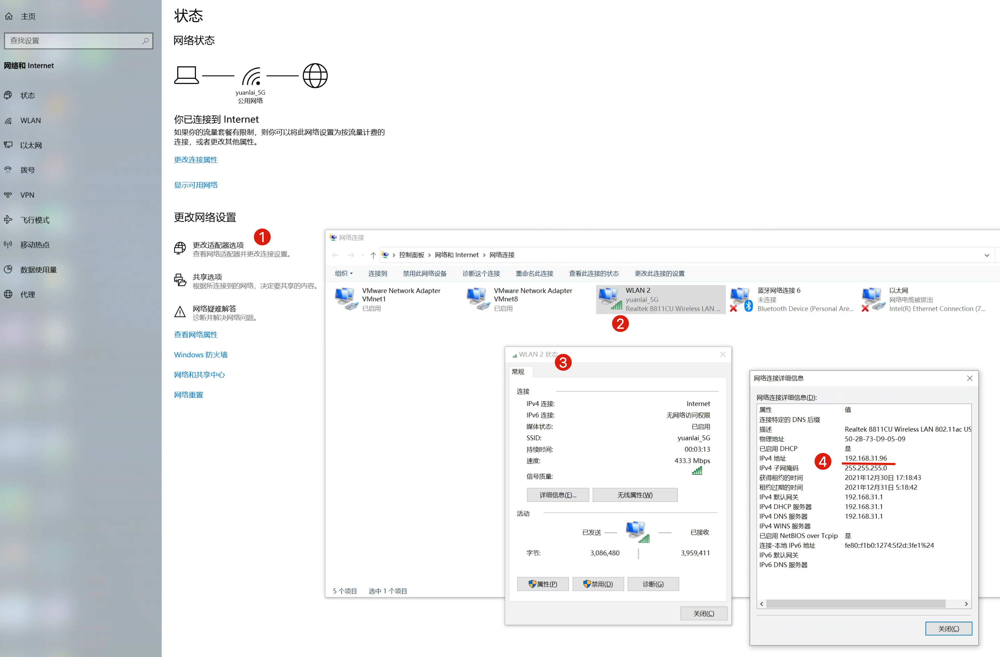
查看自己的IP（公网）
访问该网址、即可得知自己在互联网中的IP地址。
http://www.net.cn/static/customercare/yourip.asp
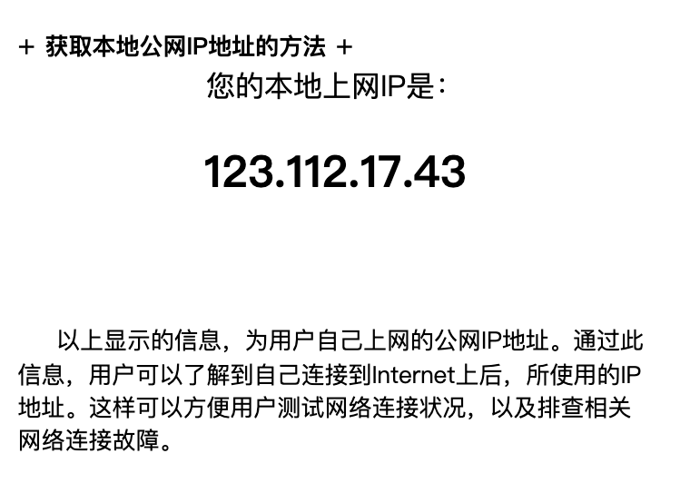
IP地址理解
Ip地址由两部分组成，网络部分+主机部分
网络部分指的是同一个网段、好比咱们这间教室，就是路由器分配的一个局域网内，在这个局域网内的每一个人都有自己独立的主机地址。
于超老师 192.168.0.15
老王同学 192.168.0.46
其他同学 192.168.0.x
如果超哥想知道所有同学的IP，怎么办？
1.大伙现在查看一下自己的IP，然后发在微信群里
2.这个操作如果用自动化来实现该如何？
并且这个IP地址是有取值范围的，一个IP地址分为四段
a.b.c.d 用点分开
我们暂时只需要记住，a的取值范围是1~223 ，其他是0~255
特殊IP
- 0.0.0.0
- 在服务器中，0.0.0.0指的是本机上的所有IPV4地址，如果一个主机有两个IP地址，192.168.1.1 和 10.1.2.1，并且该主机上的一个服务监听的地址是0.0.0.0 和端口 8080,那么通过这两个
- 在服务器中，0.0.0.0指的是本机上的所有IPV4地址，如果一个主机有两个IP地址，192.168.1.1 和 10.1.2.1，并且该主机上的一个服务监听的地址是0.0.0.0 和端口 8080,那么通过这两个
- 127.0.0.1
- 回环地址
- IP从127.0.0.0到127.255.255.255都将环回到本地主机中；
- 也就是你发送的数据来回在笔记本内绕圈。
- 一般用于程序运行在本机，测试访问本机的该程序。
- localhost
- 是一个域名，主机名，一般和127.0.0.1绑定，同样是用作本地回环测试。
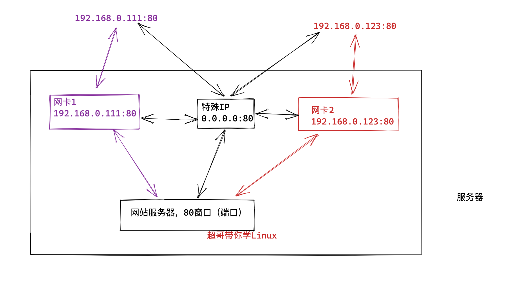
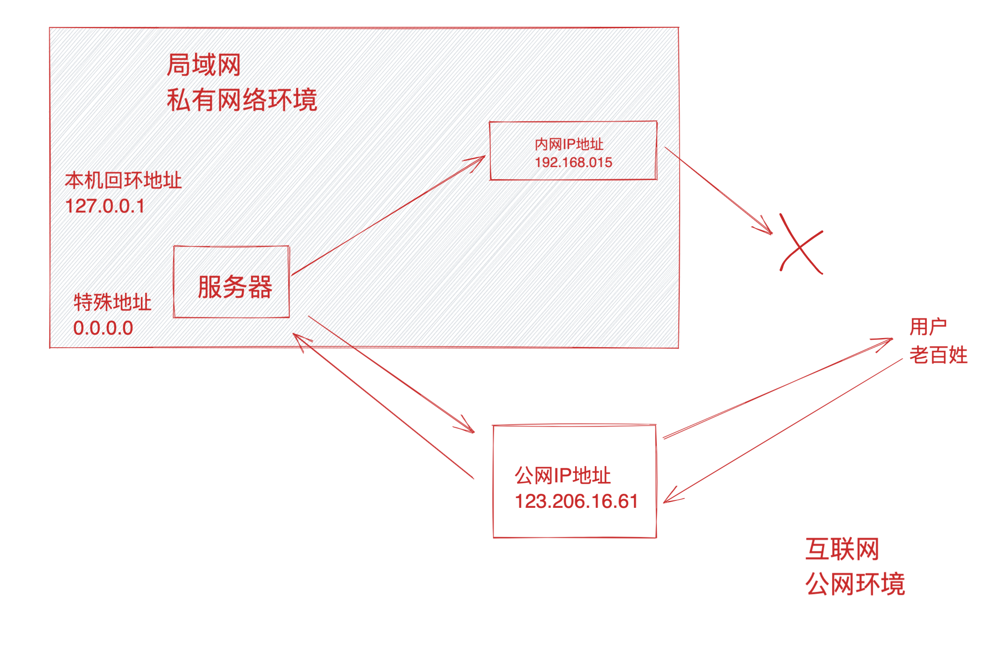
怎么使用特殊IP
- 127.0.0.1是一个回环地址，属于虚拟的特殊地址，用于机器内部通信。
- 程序部署在127.0.0.1上，只能自己访问调试。
- 0.0.0.0才能够真正代表机器的网络地址。
- 一个服务器可以有多个网卡、多个IP地址
- 绑定0.0.0.0即表述注册在所有IP上，都可以访问到应用。
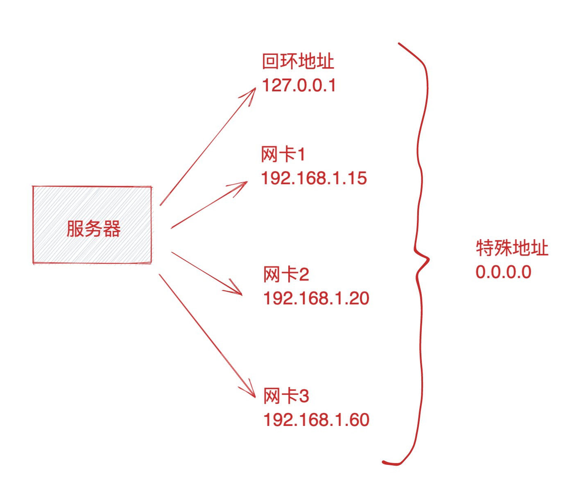
域名
任何连上互联网的电脑都可以通过一个公共IP地址访问到，但是IP地址比较难记忆，人类很难通过数字去区分网站的作用，并且IP地址会改变，那就更无法记忆了。
你能保证自己名字一直不变，但是你的手机号可能会换。
220.181.38.251 百度网 这个ip还不是固定的。。你换个网络环境，再试试百度的ip。
140.205.220.96 淘宝网
你会发现ip很难记忆，且难以使用。
为了解决这些问题，域名出现了。
域名说白了就是一个名字，就好比我们认人，不是喊名字，而是喊他的身份证号。。。。那必然不可行。
域名就是用于找到服务器位置的一串字母、数字的组合。
权威域名解释
腾讯云
https://cloud.tencent.com/document/product/242/8569
工信部域名管理说明
.XXX（顶级域名）为全球范围内的组织和个人提供经济可行的网上 展示平台，供其注册与公司名称或所提供服务一致的域名，旨在为 各行各业提供简单、全面、醒目的域名。
根据互联网名称与数字地址分配机构（ICANN）和国家政策法规 规定，.XXX 下二级域名注册应通过 ICANN2013 认证注册服务机构， 且该注册服务机构需获得国内电信主管部门批准。
域名的结构
一个域名是由几部分（有可能只是一部分，也许是两部分，三部分...）组成的简单结构，它被点分隔，不同于中文书写顺序，它需要从右到左阅读。
www.yuchaoit.cn和yuchaoit.cn的关系是？
直接访问taobao.com和www.taobao.com区别是？
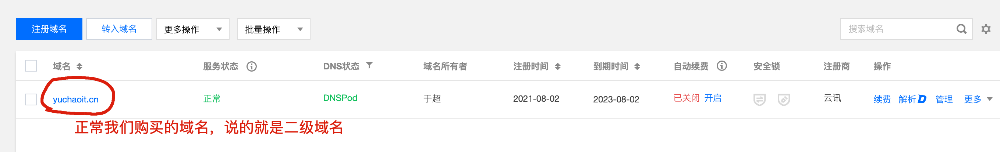
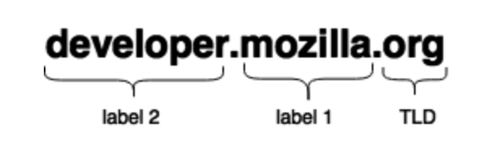
TLD (en-US) （Top-Level Domain，顶级域名）
顶级域名用于告诉用户该域名提供的服务类型。
顶级域名就是最后一个小数点，结尾的字母。
如.cn .net .com
- 国际通用顶级域名：
- 也叫国际域名，是使用最早和使用最广泛的域名。
- 表示公司企业的“.com”
- www.taobao.com
- www.jd.com
- 表示网络服务的“.net”
- www.csdn.net
- 表示非盈利组织的“.org”等
- www.python.org
- 包含“.gov”的顶级域名只能被政府部门使用
- www.gov.cn
- 包含.edu只能为教育或研究机构使用
- www.buct.edu.cn 北京化工大学
- www.cupl.edu.cn 中国政法大学
- 表示国家地区的如“.cn”，表示美国的“.us”
- www.yuchaoit.cn
世界上所有的顶级域名列表，可以在这里找到
https://www.icann.org/resources/pages/tlds-2012-02-25-en
未来我们可能会进入一个运维部门，专门维护企业内部DNS系统，就是要和域名打交道。
Secondary Level Domain, 二级域名
位于顶级域名前一个就叫做二级域名
taobao.com
yuchaoit.cn
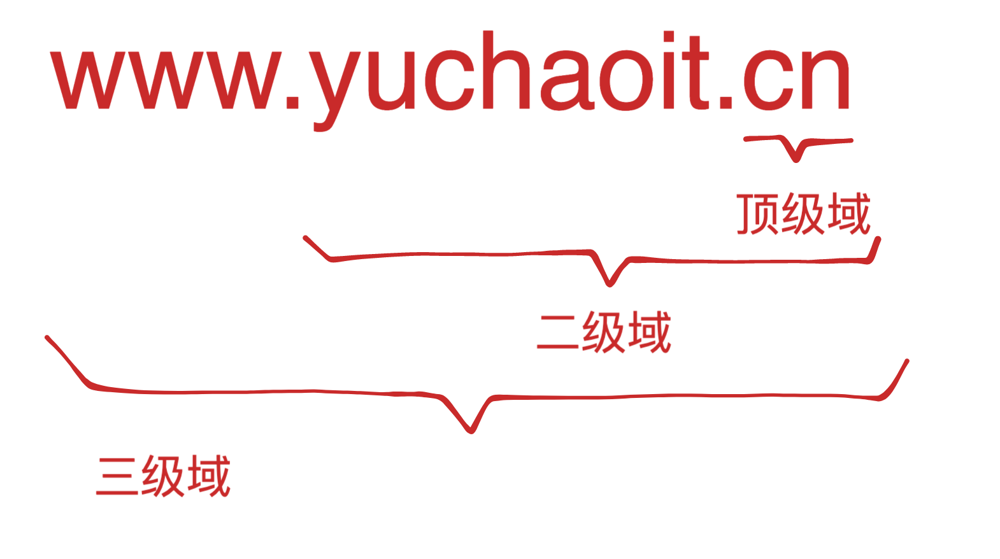
父域名、子域名
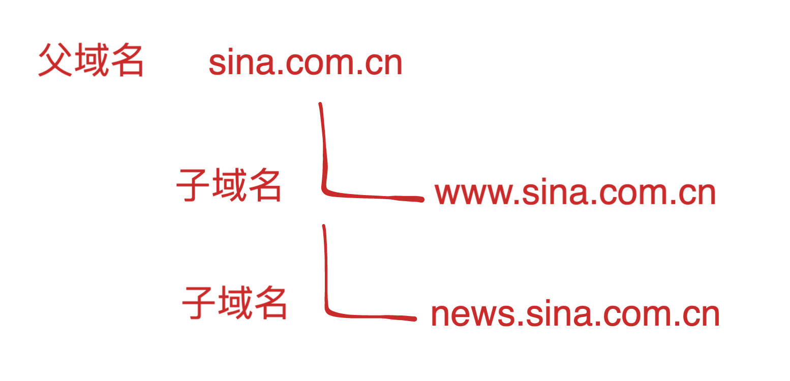
域名总结
- 顶级域
- .cn
- .com
- .net
- .gov
- .edu
- 二级域名（买域名就是二级域名，收费）
- yuchaoit.cn
- qq.com
- baidu.com
- taobao.com
- 三级域名（从这里开始免费添加域名解析）
- www.yuchaoit.cn
- 依次类推、四级域名、五级域名
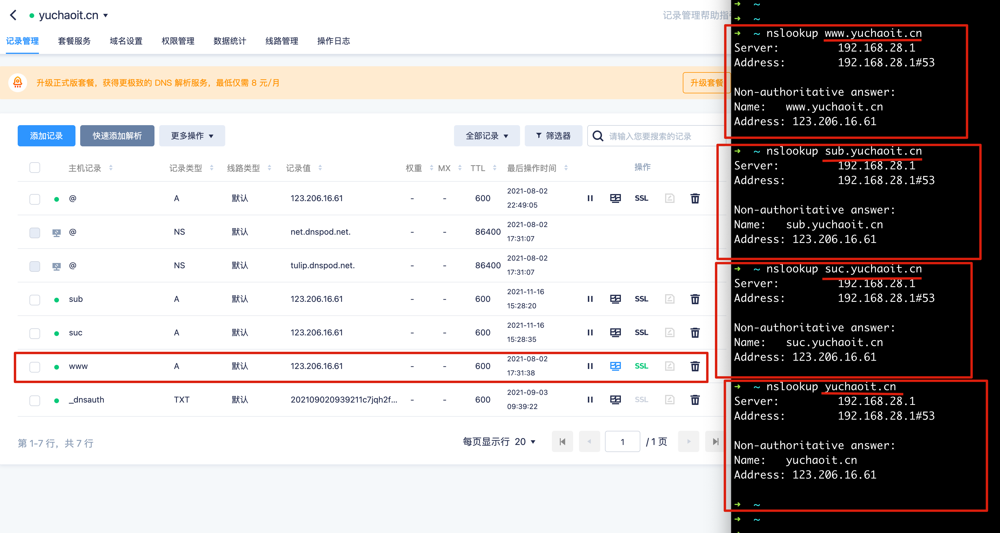
公网/局域网/NAT
公网是什么
局域网是什么
NAT是什么
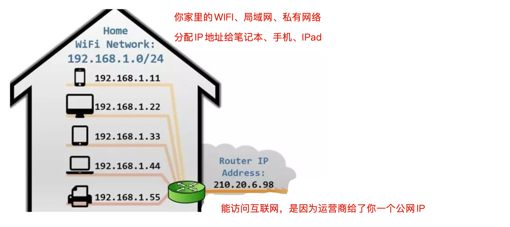
局域网的应用
- 你的家庭网络，使用的是路由器分配的一个局域网段，如
192.168.1.0~192.168.1.255，这区间的IP数量，足够你家的电子产品使用。 - 局域网内的电子设备可以互相访问，你在家搭建了一个局域网游戏，CS枪战游戏，你隔壁的邻居不连你家WIFi的话，就没法和你一起玩。
公网的应用
- 运营商送你的一个光猫上存在一个公网IP地址，你家的局域网WIFI就是通过这个IP访问百度的。
- 你在腾讯游戏对战平台大厅，开了一个CS房间，密码超哥666，你邻居，很快速的加入到房间，你俩开始biubiubiu，开心的玩耍。这是因为你们两家，通过公网IP连接上了腾讯的游戏平台。
NAT网络地址转换
1.你连接家里的WIFI，路由器自动给你分配了一个局域网IP地址，但是能访问百度，就是路由器给你做了转换。
2.你家里会有多个联网设备，都会得到一个内网IP，每个设备都在刷抖音的时候，设备就是在向外发数据，你手机的内网IP被无线路由器转换为了公网IP。同理，抖音的视频数据，又被路由器转换后，发给了你的手机。
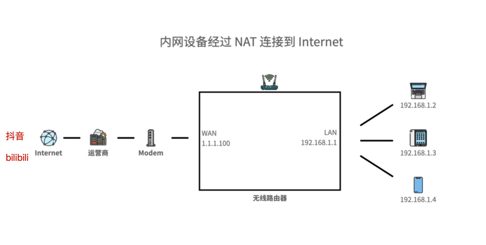
如果没有NAT功能，每个设备都需要一个独立的公网IP，那全世界的IPv4 IP地址，早就不够用了。
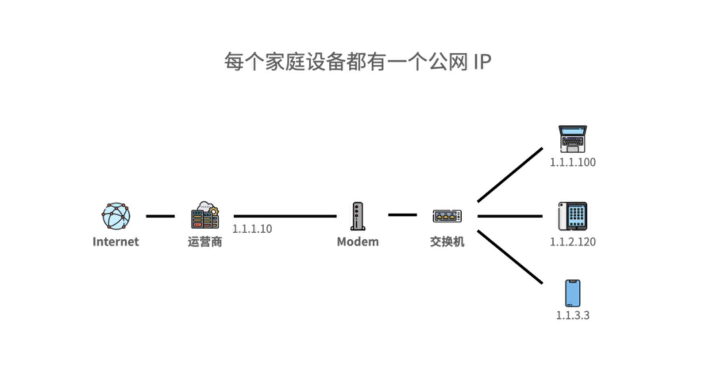
另外，在 IPv4 地址资源越来越紧张的今天，很多电信运营商，已经不再为用户分配公网 IP；而是直接在运营商自己的路由器上运营 NAT，为用户分配内网 IP。这样，只需要少量的 IP 地址，就可以支撑大量用户的上网需求。这样的 NAT 又叫做 CGN（Carrier-grade NAT，电信级 NAT）。
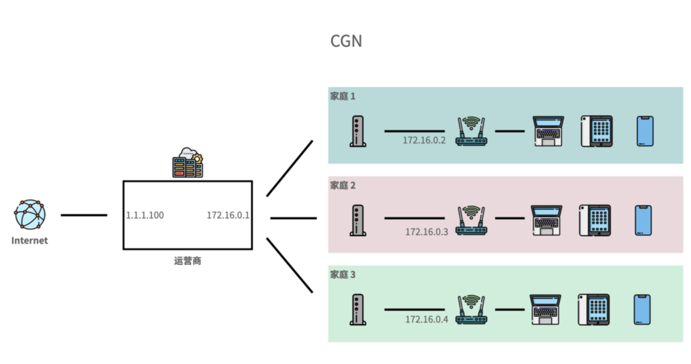
家庭网络普遍使用端口映射的方式，NAT的核心是一张映射表（源IP地址，源端口，目的IP地址，目的端口），将内网源IP地址和端口映射到同一个公网地址的不同端口，如下图所示。
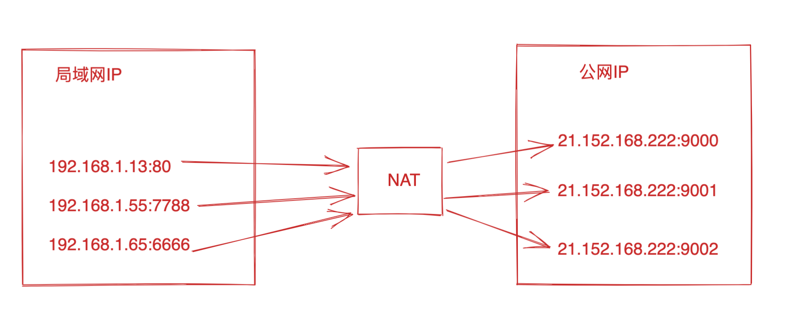
端口
我们通过ip可以找到服务器，问题是，服务器上会有很多的进程，该如何定位到具体的某一个应用程序呢？
下图是windows的任务管理器，比如微信，搜狗输入法，qq，都是每一个运行中的应用程序，称之为进程。
每一个进程都会有一个ID号，叫做PID，比如微信的进程ID号是15501，并且微信还打开了一个窗口，让我们用户可以和微信交互。
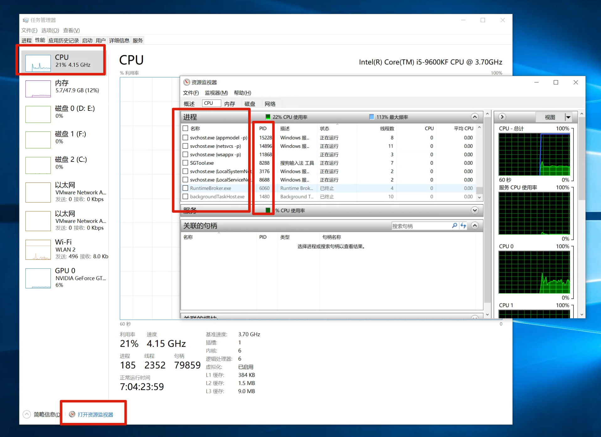
怎么理解这个窗口的概念？图解端口
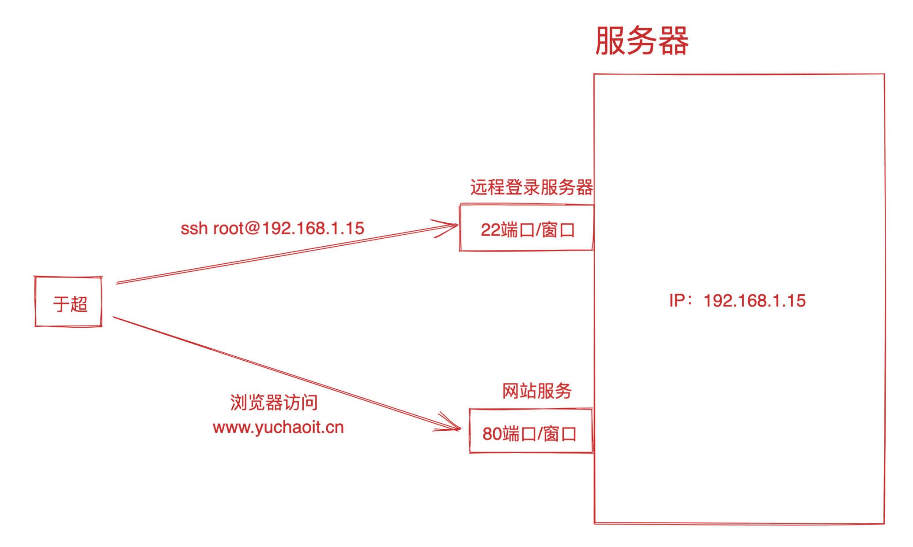
轻松理解端口
去银行办理业务，取钱===访问服务器上一张图片
找到银行地理位置===找到服务器IP，服务器位置
2号窗口办理取钱业务===80端口获取网站数据
常见端口
- 80 http网站端口
- 443 https网站端口
- 22 linux连接端口
- ...